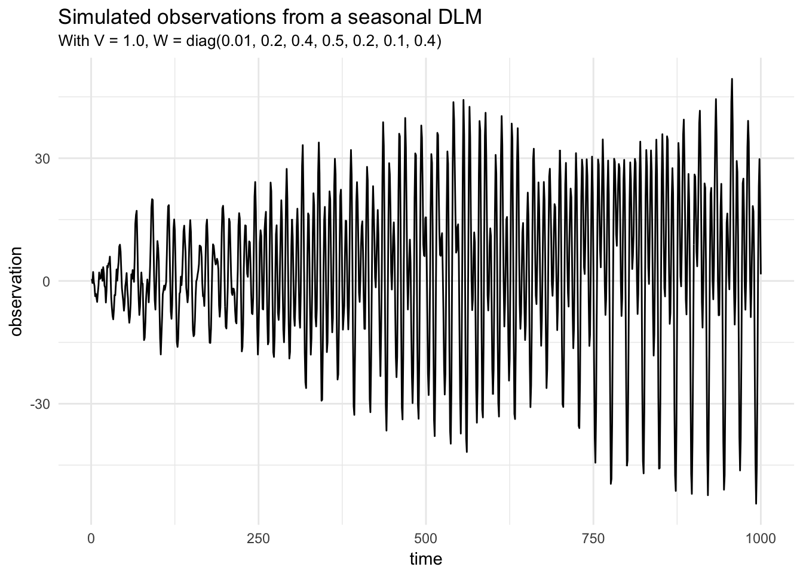
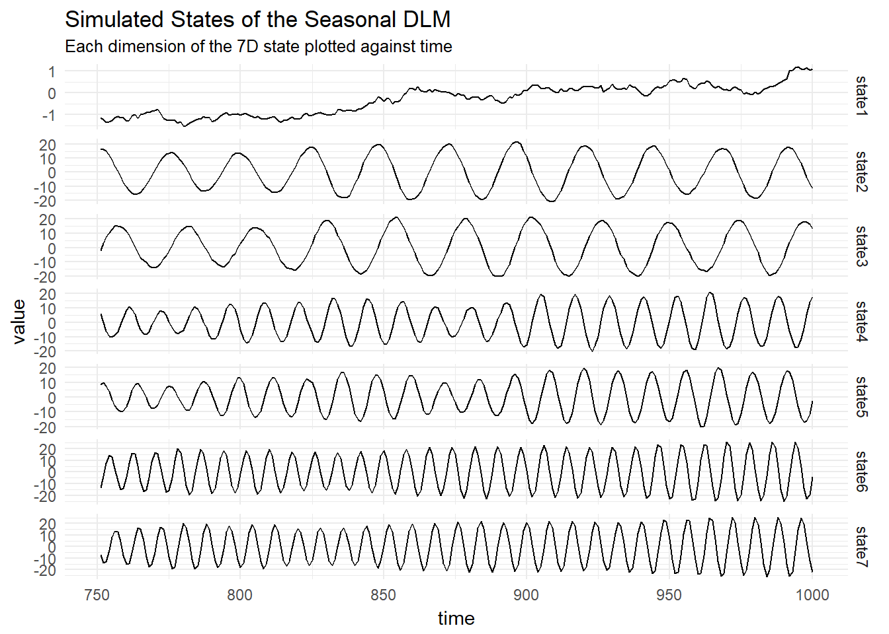
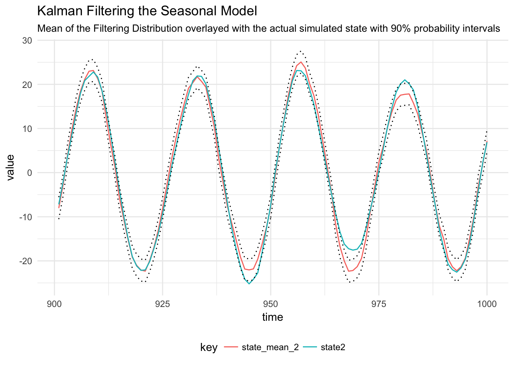
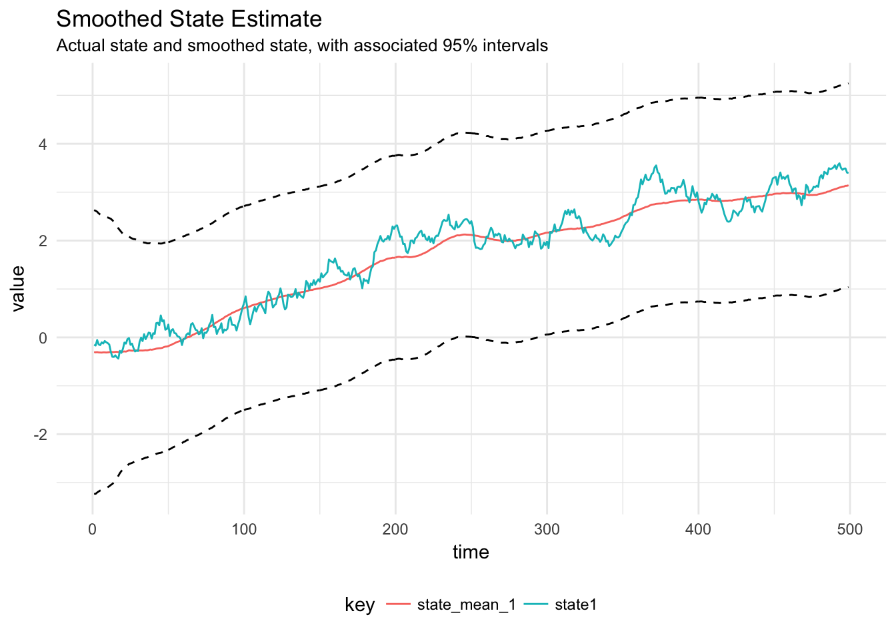
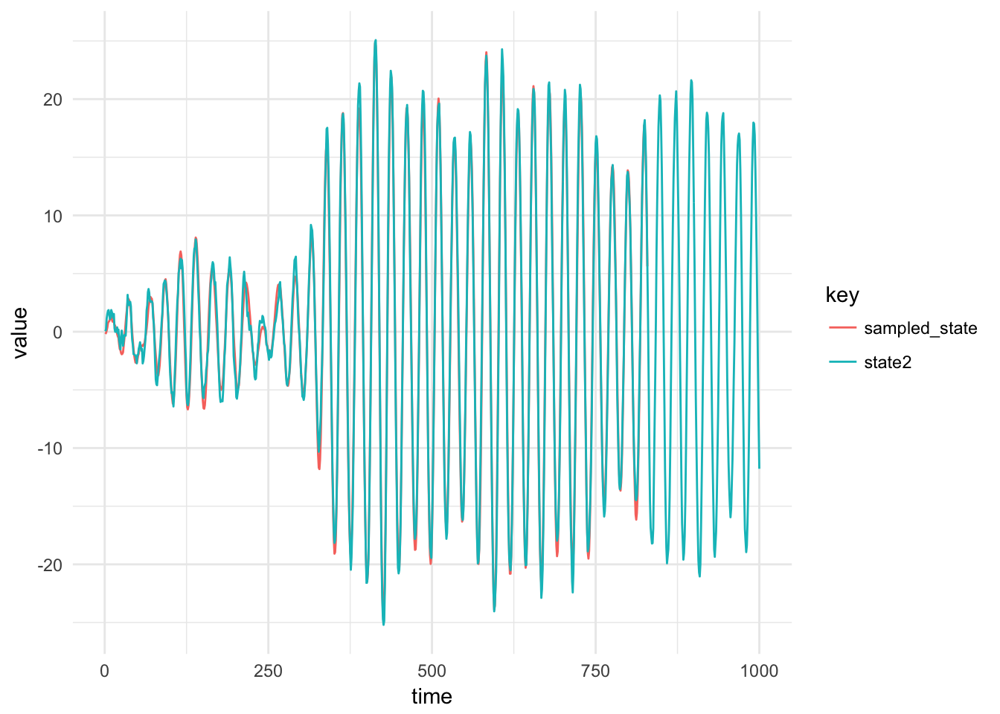

sims = read_csv("../data/seasonal_dlm.csv")
sims %>%
ggplot(aes(x = time, y = observation)) +
geom_line() +
labs(title = "Simulated observations from a seasonal DLM",
subtitle = "With V = 1.0, W = diag(0.01, 0.2, 0.4, 0.5, 0.2, 0.1, 0.4)")
Plot the states:
sims %>%
select(time, contains("state")) %>%
gather(key, value, -time) %>%
ggplot(aes(x = time, y = value)) +
geom_line() +
facet_wrap(~key, scales = "free_y", strip.position = "right", ncol = 1) +
labs(title = "Simulated States of the Seasonal DLM",
subtitle = "Each dimension of the 7D state plotted against time")
filtered = read_csv("../data/seasonal_filtered.csv")
filtered %>%
inner_join(sims, by = "time") %>%
filter(time > 900) %>%
mutate(upper = qnorm(p = 0.95, mean = state_mean_2, sd = sqrt(state_variance_2))) %>%
mutate(lower = qnorm(p = 0.05, mean = state_mean_2, sd = sqrt(state_variance_2))) %>%
gather(key, value, state_mean_2, state2) %>%
ggplot(aes(x = time, y = value, colour = key)) +
geom_line() +
geom_line(aes(x = time, y = lower), linetype = 3, colour = "#000000") +
geom_line(aes(x = time, y = upper), linetype = 3, colour = "#000000") +
theme(legend.position = "bottom") +
labs(title = "Kalman Filtering the Seasonal Model",
subtitle = "Mean of the Filtering Distribution overlayed with the actual simulated state with 90% probability intervals")
smoothed = read_csv("../data/seasonal_smoothed.csv")
smoothed %>%
filter(time < 500) %>%
inner_join(sims, by = "time") %>%
mutate(upper_smoothed = qnorm(p = 0.975, mean = state_mean_1, sd = sqrt(state_variance_1))) %>%
mutate(lower_smoothed = qnorm(p = 0.025, mean = state_mean_1, sd = sqrt(state_variance_1))) %>%
gather(key, value, state1, state_mean_1) %>%
ggplot(aes(x = time, y = value, colour = key)) +
geom_line() +
geom_line(aes(x = time, y = lower_smoothed), linetype = 2, colour = "#000000") +
geom_line(aes(x = time, y = upper_smoothed), linetype = 2, colour = "#000000") +
theme(legend.position = "bottom") +
labs(title = "Smoothed State Estimate",
subtitle = "Actual state and smoothed state, with associated 95% intervals")
Traceplot and running mean for posterior distribution of the observation variance parameter, \(V\)
Diagnostic plots for the MCMC chain representing draws from the posterior distribution of the System noise covariance matrix for the simulated seasonal model
Testing the gibbs sampler FFBS algorithm by keeping the observation and system noise matrices constant and sampling the state using the FFBS algorithm. This is then compared to the actual state.
